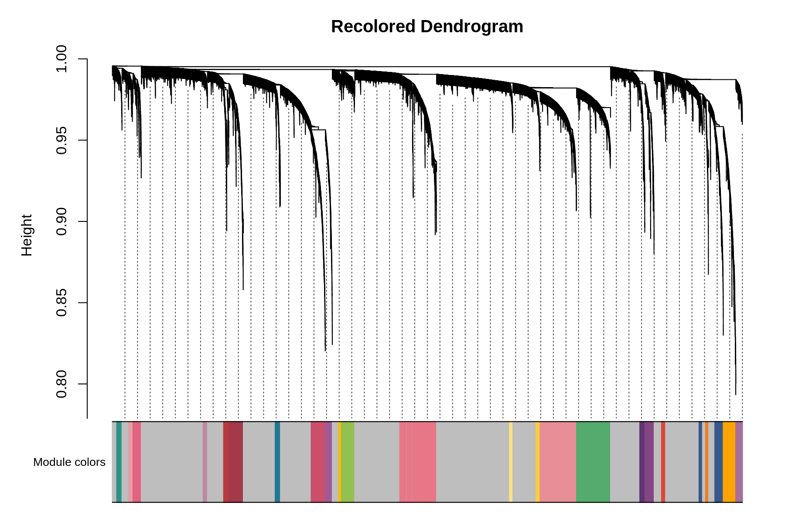
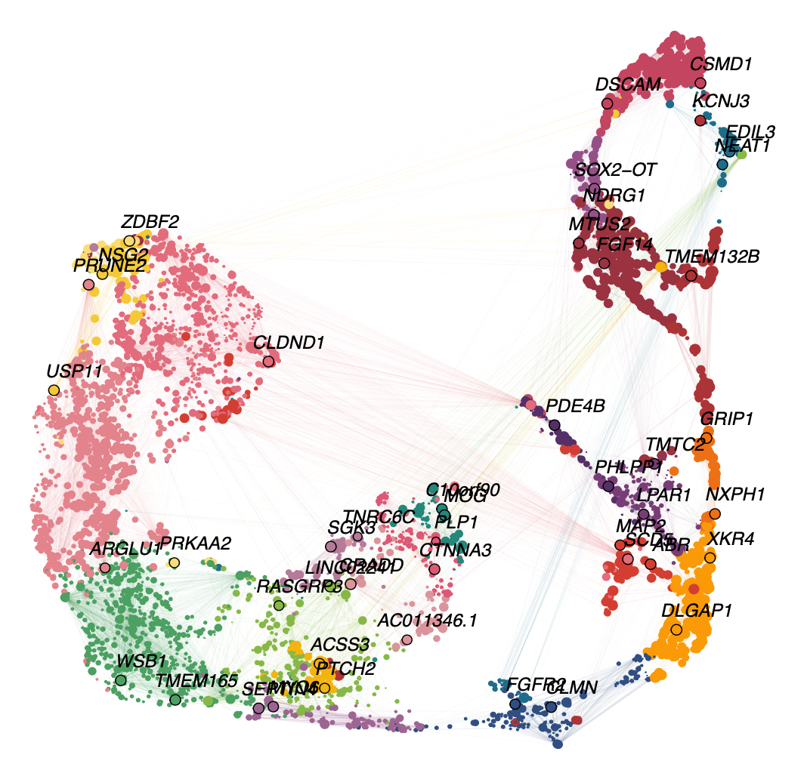
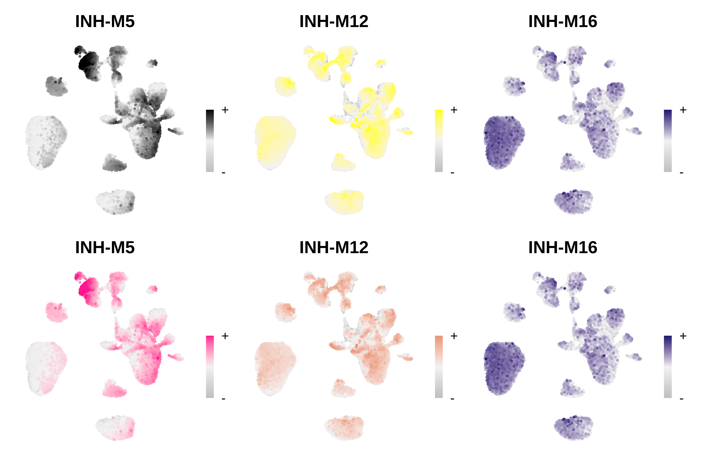

Module customization
customization.RmdBy default, hdWGCNA (and WGCNA) assign each module a unique color, and often modules are referred to by this color. In this tutorial, we show how we can rename the hdWGCNA modules, and assign a new color to the hdWGCNA modules.
First, we load the required libraries and the dataset.
# single-cell analysis package
library(Seurat)
# plotting and data science packages
library(tidyverse)
library(cowplot)
library(patchwork)
# co-expression network analysis packages:
library(WGCNA)
library(hdWGCNA)
# using the cowplot theme for ggplot
theme_set(theme_cowplot())
# set random seed for reproducibility
set.seed(12345)
# load the Zhou et al snRNA-seq dataset
seurat_obj <- readRDS('data/Zhou_control.rds')Renaming hdWGCNA modules
hdWGCNA includes the ResetModuleNames function, which assigns a new name to each module. The new_name parameter takes a string as the base name for each module, and a number is then appended to this name. The modules will be re-named in the entire hdWGCNA experiment, so all subsequent plots etc will show the updated names. The following code shows how to rename the hdWGCNA modules.
# run RenameModules
seurat_obj <- ResetModuleNames(
seurat_obj,
new_name = "Renamed-M" # the base name for the new modules
)In the next section, we will re-make some of the hdWGCNA visualizations so we can see that the module names have been updated.
Re-coloring hdWGCNA modules
Here we demonstrate how to assign new colors to the hdWGCNA modules using the ResetModuleColors function. This function takes a list of new colors to replace the old colors, or a named list in order to change the colors selected modules. The ordering of the colors depends on the factor level of the hdWGCNA modules themselves. Additionally, this function ensures that the “grey moddule”, which contains genes that did not get assigned to a co-expression module, remains grey.
Change the colors of all modules
In this example, we use the MetBrewer package to select a new color scheme for our modules. First, we can make a table to show the original module-color pairings.
# get the module table
modules <- GetModules(seurat_obj)
mods <- unique(modules$module)
# make a table of the module-color pairings
mod_colors_df <- dplyr::select(modules, c(module, color)) %>%
distinct %>% arrange(module)
rownames(mod_colors_df) <- mod_colors_df$module
# print the dataframe
mod_colors_dfOutput
module color
INH-M1 INH-M1 lightgreen
INH-M2 INH-M2 lightyellow
INH-M3 INH-M3 blue
INH-M4 INH-M4 cyan
INH-M5 INH-M5 black
INH-M6 INH-M6 green
INH-M7 INH-M7 brown
INH-M8 INH-M8 purple
INH-M9 INH-M9 salmon
INH-M10 INH-M10 turquoise
INH-M11 INH-M11 greenyellow
INH-M12 INH-M12 yellow
INH-M13 INH-M13 tan
INH-M14 INH-M14 lightcyan
INH-M15 INH-M15 grey60
INH-M16 INH-M16 midnightblue
INH-M17 INH-M17 red
grey grey grey
INH-M18 INH-M18 magenta
INH-M19 INH-M19 pink
INH-M20 INH-M20 royalblueNext, we will use ResetModuleColors to change all of the module-color pairings.
# load MetBrewer color scheme pakckage
library(MetBrewer)
# get a table of just the module and it's unique color
mod_color_df <- GetModules(seurat_obj) %>%
dplyr::select(c(module, color)) %>%
distinct %>% arrange(module)
# the number of unique modules (subtract 1 because the grey module stays grey):
n_mods <- nrow(mod_color_df) - 1
# using the "Signac" palette from metbrewer, selecting for the number of modules
new_colors <- paste0(met.brewer("Signac", n=n_mods))
# reset the module colors
seurat_obj <- ResetModuleColors(seurat_obj, new_colors)Now we will test some of the different visualization functions to check that the colors were successfully modified.
Code
PlotDendrogram(seurat_obj, main='Recolored Dendrogram')
Code
# make a featureplot of hMEs for each module
plot_list <- ModuleFeaturePlot(seurat_obj)
# stitch together with patchwork
wrap_plots(plot_list, ncol=6)
Code
ModuleUMAPPlot(
seurat_obj,
edge.alpha=0.15,
sample_edges=TRUE,
edge_prop=0.2,
label_hubs=2
)
Change the colors of selected modules
In this example, we will change the colors of only two modules rather than all of them. We need to supply ResetModuleColors with a named list detailing which modules we want to change, and which color to change them to. We will make a FeaturePlot before and after changing the colors to test if they were properly changed.
# make a featureplot before changing colors
pl1 <- ModuleFeaturePlot(seurat_obj, module_names = c('INH-M5', 'INH-M12', 'INH-M16'))
# set new colors
new_colors <- list('INH-M12' = 'darksalmon', 'INH-M5' = 'deeppink')
seurat_obj <- ResetModuleColors(seurat_obj, new_colors)
# make a featureplot after changing colors
pl2 <- ModuleFeaturePlot(seurat_obj, module_names = c('INH-M5', 'INH-M12', 'INH-M16'))
# stitch together with patchwork
wrap_plots(c(pl1, pl2), ncol=3)
We successfully changed the color of modules INH-M5 and INH-M12, while leaving all of the other module colors as they were.